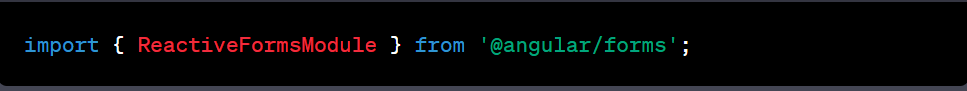
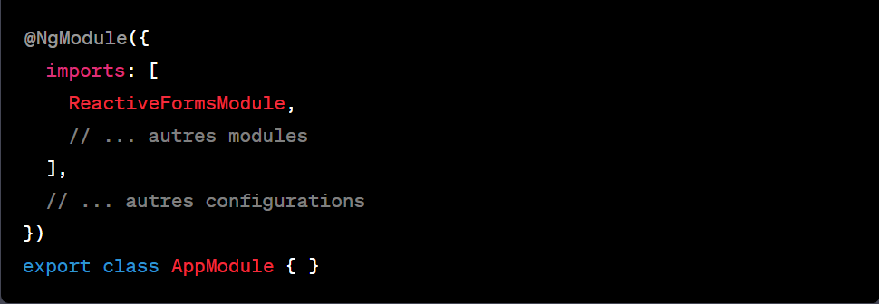
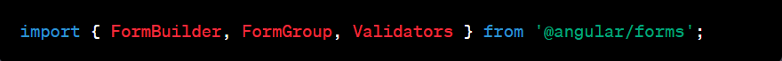
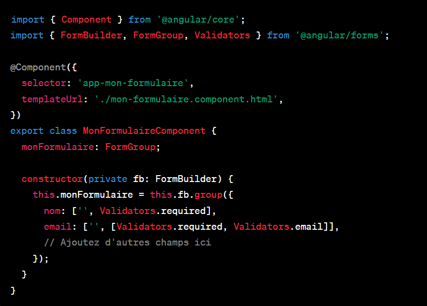
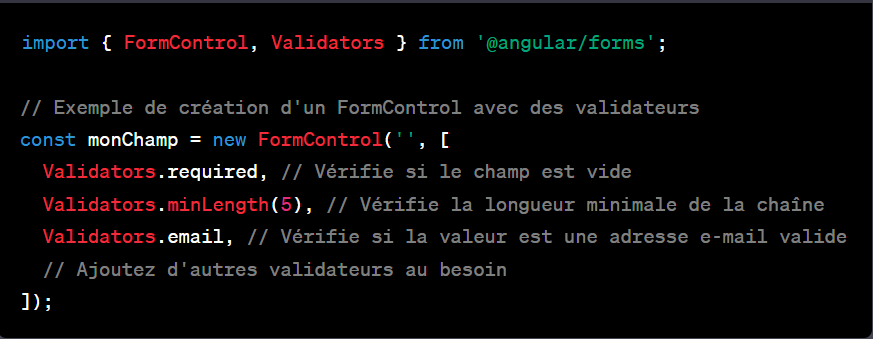
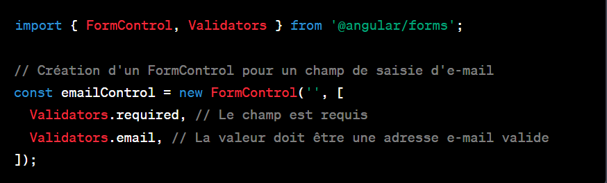
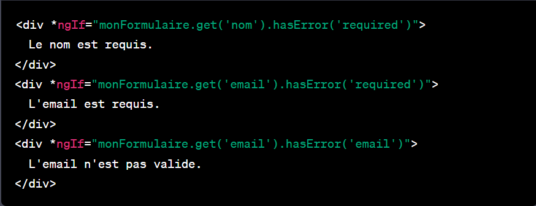

Synthese: Reactive Forms
titre des etapes
- Importation des Modules Requis
- Création d'un Formulaire Réactif avec FormBuilder
- Validation des Données avec Validators
- Liaison du Formulaire au Modèle HTML avec formGroup
- Gestion des Soumissions du Formulaire avec ngSubmit
- Affichage des Messages d'Erreur dans le Modèle HTML
- Gestion de l'État du Formulaire et des Contrôles
Etapes detailler
-
Ajoutez les modules au NgModule : Incluez ces modules
dans le tableau imports de votre module Angular.


-
Créez un formulaire réactif dans le composant : Dans
votre composant,Importer et utilisez FormBuilder dans le constructeur
pour créer votre FormGroup et définir les FormControl avec les
validateurs requis.

-
FormGroup : Un FormGroup est une classe qui représente un groupe de
contrôles de formulaire dans une application Angular. Il est utilisé
pour regrouper plusieurs FormControl en un seul conteneur logique. Un
FormGroup est responsable de la validation et de la gestion de l'état
global du groupe de contrôles.
-
FormControl : Un FormControl est une classe qui représente un contrôle
individuel dans un formulaire réactif en Angular. Il peut s'agir d'un
champ de texte, d'une case à cocher, d'un bouton radio, ou de tout
autre élément interactif dans un formulaire. Chaque FormControl est
responsable de la gestion de sa propre valeur, de sa validation et de
son état, comme le fait qu'il soit valide ou non.
-
FormBuilder en Angular est comme un outil qui vous aide à construire
des formulaires plus facilement en vous évitant d'écrire beaucoup de
code compliqué. C'est un peu comme un "constructeur de formulaires".

-
Validation des Données avec Validators :Les validateurs
sont appliqués aux FormControl ou aux champs de formulaire individuels
dans Angular. Ils sont utilisés dans le code TypeScript pour définir les
règles de validation spécifiques à chaque champ. Voici où vous les
placez et un exemple générique :
-
Placement dans le Code TypeScript : Vous devez placer les validateurs
directement lors de la création d'un FormControl ou d'un groupe de
contrôles (FormGroup) dans le code TypeScript de votre composant. Les
validateurs sont spécifiés sous forme de tableau et sont passés en
tant que deuxième argument lors de la création d'un FormControl. Voici
comment cela se fait :

-
Exemple Générique : Voici un exemple générique de création d'un
FormControl avec des validateurs. Ce contrôle valide la présence d'une
valeur et vérifie si cette valeur est une adresse e-mail valide :

-
Dans cet exemple, emailControl est un FormControl qui est configuré
pour valider la présence d'une valeur (obligatoire) et vérifier si
cette valeur est une adresse e-mail valide. Vous pouvez ensuite lier
ce contrôle à un champ de formulaire dans votre modèle HTML en
utilisant formControlName, comme mentionné précédemment.
-
Liez le formulaire au modèle : Dans votre modèle HTML,
liez les champs de formulaire aux propriétés de votre modèle en
utilisant formControlName.
-
formControlName : formControlName est une directive Angular utilisée
dans le modèle HTML pour lier un champ de formulaire à un FormControl
spécifique dans un FormGroup. Elle permet d'établir une liaison
bidirectionnelle entre l'élément du modèle HTML (comme un champ de
saisie) et le contrôle de formulaire associé, de sorte que toute
modification de la valeur de l'élément dans le modèle HTML est
reflétée dans le FormControl, et vice versa. Cela simplifie la gestion
des données de formulaire et permet de bénéficier des fonctionnalités
de validation et de suivi des états fournies par Angular pour ce
contrôle spécifique.
-
Gestion des soumissions : Pour gérer la soumission du
formulaire, écoutez l'événement (ngSubmit) dans votre modèle et
implémentez la méthode correspondante dans votre composant.
-
Validation : Utilisez les validateurs fournis par
Angular (comme Validators.required, Validators.email, etc.) pour
effectuer une validation côté client. Les erreurs de validation seront
automatiquement associées aux contrôles et peuvent être affichées dans
le modèle.

-
Gestion des états : Vous pouvez également surveiller
l'état du formulaire et de ses contrôles pour des fonctionnalités
avancées telles que la désactivation du bouton de soumission jusqu'à ce
que le formulaire soit valide.
C'est une introduction de base aux formulaires réactifs en Angular en
utilisant uniquement le ReactiveFormsModule. Cette approche est
recommandée lorsque vous avez besoin d'un contrôle plus granulaire sur
la gestion des formulaires.
{{ this.nomValue }} {{ this.laDate }}